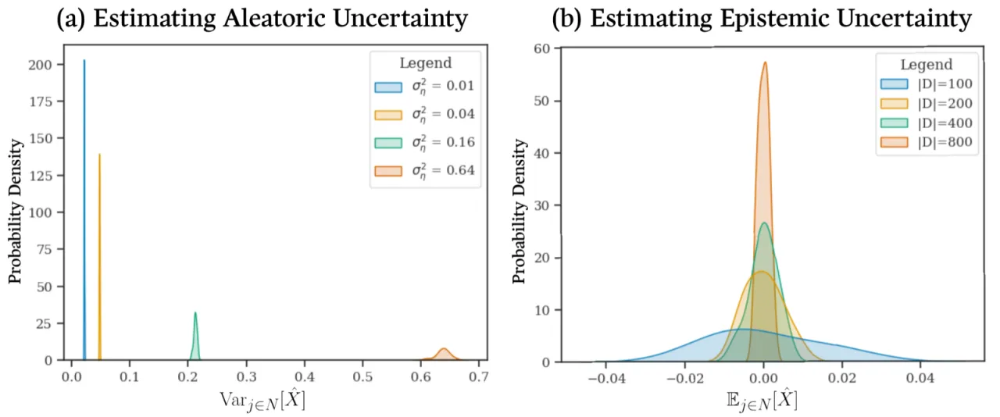
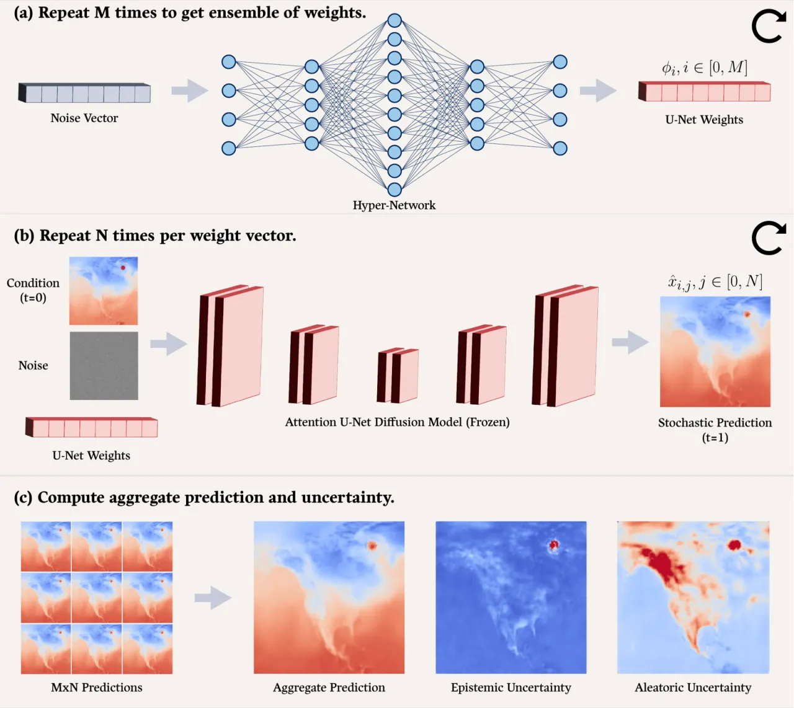
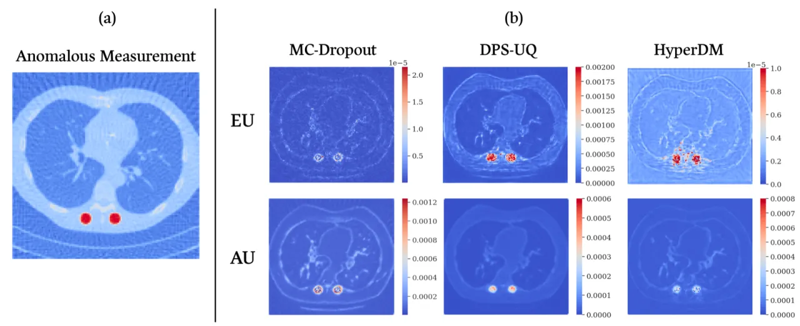
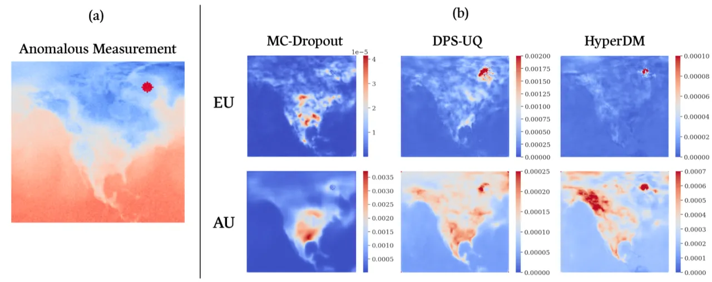

在医学影像与天气预测等高风险领域，区分可通过更多数据消减的 epistemic uncertainty（认知不确定性）与任务本身固有的 aleatoric uncertainty（偶然不确定性）至关重要。 本文提出 HyperDM——将 Bayesian hyper-network 与条件 diffusion model 融合，仅用单个模型便能生成 M×N 规模的预测分布，从而精确分解两类不确定性，预测质量媲美甚至优于 M 倍代价的 deep ensemble。
Conditional diffusion model 已能高效地从数据后验分布中采样，这在理论上使不确定性估计变得简单：训练并采样一个大型 diffusion model 集成即可。 然而，随着模型架构复杂度增长，训练这样一个集成在计算上变得"intractable"（难以承受）。 现有单模型方案——如 Monte-Carlo dropout 和 Bayesian neural network（BNN）——要么损害预测精度，要么推理代价过高，且通常无法同时精确估计两类不确定性。
"Estimating and disentangling epistemic uncertainty, uncertainty that is reducible with more training data, and aleatoric uncertainty, uncertainty that is inherent to the task at hand, is critically important when applying machine learning to high-stakes applications such as medical imaging and weather forecasting."

HyperDM 的核心思想是将 Bayesian hyper-network（BHN） 与 conditional diffusion model（DM） 串联，用 BHN 采样 DM 的权重以模拟权重后验 p(φ|D)，再用 DM 对每组权重多次采样以模拟似然函数 p(x|y,φ)。 整个框架仅需训练一个 BHN，推理时从中抽取 M 组权重，每组生成 N 个预测，共得 M×N 个样本，再用全方差分解公式（Law of Total Variance）将总不确定性分解为 AU 与 EU。

条件 diffusion model 通过学习反转逐步将数据分布变换为高斯分布的前向扩散过程，使得我们可以从隐式条件分布 q(x|y) 中采样。 对固定权重 φ_i，反复采样 N 次所得方差即为该权重下的 aleatoric 不确定性估计： ÂU = E_{i∈M}[Var_{j∈N}[X̂]]。 由于 DM 不对预测分布做高斯假设，相比 BNN 的混合高斯近似更为灵活。
BHN h_θ 将随机向量 z∈ℝ⁸ 映射为 DM 的权重 φ，从而隐式地近似权重后验 p(φ|D)。 由于存在多组权重都能合理解释训练数据（尤其在数据稀少时），BHN 不会塌缩到单一模式。 M 组权重预测均值之间的方差即为 epistemic 不确定性： ÊU = Var_{i∈M}[E_{j∈N}[X̂]]。 相比 BNN，HyperDM 训练快 2× 以上（toy 实验：30 s vs. 70 s），推理速度快一个数量级（生成 10,000 预测：0.7 s vs. 8.7 s）。
在两个真实高风险任务上验证：CT 图像重建（LUNA16 数据集，1,200 张肺部 CT，稀疏 Radon 变换 45 视角，Gaussian 噪声 σ²=0.16）和天气温度预测（ERA5 数据集，1,240 张地面气温图，6 小时步长，2009–2018 年 1 月）。 基线：MC-Dropout（单 DM + dropout 采样）、DPS-UQ（M 成员 deep ensemble）。 采样设置统一为 M=10，N=100，共 1000 个预测。在单张 NVIDIA RTX A6000 上训练，400 个 epoch，Adam 优化器，学习率 1×10⁻⁴。
| 方法 | LUNA16 SSIM ↑ | LUNA16 PSNR (dB) ↑ | LUNA16 CRPS ↓ | ERA5 SSIM ↑ | ERA5 PSNR (dB) ↑ | ERA5 CRPS ↓ |
|---|---|---|---|---|---|---|
| MC-Dropout | 0.77 | 30.25 | 0.023 | 0.93 | 31.34 | 0.034 |
| DPS-UQ | 0.89 | 34.95 | 0.01 | 0.94 | 32.83 | 0.013 |
| HyperDM（本文） | 0.87 | 35.16 | 0.01 | 0.95 | 33.15 | 0.012 |
在 LUNA16 上，HyperDM 的 PSNR（35.16 dB）优于 DPS-UQ（34.95 dB），而训练开销仅比 MC-Dropout 多约 3%，DPS-UQ 则需约 8× 的训练时间。 在 ERA5 上，HyperDM 的 PSNR（33.15 dB）比 DPS-UQ 高约 1%，CRPS（0.012）也略优。


论文通过改变集成规模 M 和采样次数 N 进行消融实验： （1）增大 M 能改善 out-of-distribution 检测能力（更准确的 EU 估计）； （2）增大 N 能平滑 aleatoric uncertainty 估计中的不规则性，使 AU 图更稳定。 聚合方式上，取集成均值（mean）在 SSIM / CRPS 综合指标上优于 median 和 mode。
"As a consequence of their iterative denoising process, inference on DMs is slow compared to inference on classical neural network architectures." 尽管近年加速采样策略（如 DDIM 的 few-step 采样、consistency model 的 single-step 采样）已大幅缓解此问题，但仍是实际部署的障碍。
"Hyper-networks suffer from a scalability problem in that their number of parameters scales with the number of primary network parameters. This stems from the fact that the dimensionality of the hyper-network's output layer is (in most cases) proportional to the number of parameters in the primary network." 对于现代大规模网络（数十亿参数），BHN 本身的存储和训练代价可能无法承受。LoRA 等参数高效权重生成策略是潜在解决方向。
当前实验受限于单张 NVIDIA RTX A6000，图像分辨率为 128×128，集成规模仅测试至 M=10。 "Due to the high computational costs required to train M>10 member deep ensembles, we limited baselines to ten-member ensembles for this experiment." 在更高分辨率或更大集成规模下的性能尚未得到充分验证（此条为从实验设置推断）。